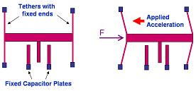

Accelerometers
An
accelerometer
is a device that measures acceleration, or the rate of change of
velocity with respect to time. Accelerometers come in various forms and
sizes, but cutting edge micromachining technology advancements in recent
years have allowed them to be built in microchip form. Today,
there are a multitude of semiconductor companies that manufacture
accelerometer IC's that not only measure linear acceleration, but other
parameters as well such as angular speed, vibrations, shock, and even tilt
positions.
One of the
pioneers in fabricating accelerometers in integrated circuit form is
Analog Devices, which produces the ADXL50 accelerometer. The
ADXL50 provides an output voltage that varies proportionally with the
amount of acceleration experienced along its sensitive axis. It has an
input range of -50g to +50g, with a sensitivity of approximately 1 V per
50 g. Thus, a 50-g acceleration would either decrease or increase
the output at 0 g by 1V, depending on the direction of the acceleration.
Since the ADXL50 is calibrated to output 1.8V when there is no
acceleration, the output would either 0.8 V or 2.8 V at 50 g, again
depending on the acceleration's direction.
The ADXL50 is an example of
a capacitive accelerometer, i.e., it measures capacitances in order to
measure the acceleration. This accelerometer applies two basic
principles of physics in its operation. The first one is Hooke's Law,
which states that a spring, when stretched, will exert a restoring force
F that's proportional to its increase in length x, i.e., F = kx. The second
one is Newton's Second Law, which states that the force F exerted by a
body is equal to its mass m multiplied by its acceleration a, i.e., F = mA.
Combining these two
equations, A = kx/m, which means that a body with mass m will stretch a
spring (whose elongation property is characterized by k) by a distance
of x if its acceleration is A. The ADXL50 has a mass-spring system
consisting of a bar of silicon (which is the mass) that is held by four
tethers (one at each corner), as shown in Figure 1.
The four
tethers, the feet of which are anchored, compose the spring system. When
the mass is subjected to an acceleration, it moves with respect to the
anchored feet of the tethers, causing the tethers to 'stretch' like a
spring. The greater the acceleration experienced, the larger is the
displacement. This system therefore translates the acceleration into a
displacement, allowing the acceleration to be measured by measuring the
displacement.

Figure 1.
A Differential Capacitive Accelerometer Mass-Spring
System at rest (left)
and when subjected to acceleration (right)
The
displacement of the bar is measured in terms of the difference between
two capacitances formed by the accelerometer's structure in Figure 1.
The two fixed capacitor plates form a capacitor each with the inner
capacitor plate that's attached to the moving mass, i.e., they both
share a common capacitor plate (the one that moves with the mass).
The value of the capacitance of each capacitor changes with the movement
of the inner capacitor. Since the change in capacitance of one
capacitor is opposite to that of the other capacitor, even the direction
of the acceleration can be determined from the changes.
The amounts
and rates of change of these two capacitances are then translated by
on-chip signal conditioning circuits into an output voltage that indicates the
strength and direction of the acceleration. The on-chip signal conditioning circuitry may consist of amplifiers,
filters, oscillators,
demodulators, and even self-test circuitry.
Note that
velocity is simply the integral of acceleration, and displacement is
simply the integral of velocity. As such, information about the
velocity and displacement of the body may also be known by performing
the necessary integration steps on the acceleration information obtained
from the accelerometer.
Performance
parameters for accelerometers include: 1) the Zero g Offset, or the
voltage output at 0 g; 2) the Sensitivity, or the output voltage per g;
3) the Noise, which determines the minimum resolution of the sensor; 4)
the Temperature Range; 5) the Bias Drift with Temperature, or how the 0
g output changes with temperature; 6) the Sensitivity Drift with
Temperature, or how the 0 g output changes with temperature; 7) the
Bandwidth; and 8) the Power Consumption.
Primary Reference:
www.analog.com
HOME
Copyright
©
2005
EESemi.com.
All Rights Reserved.